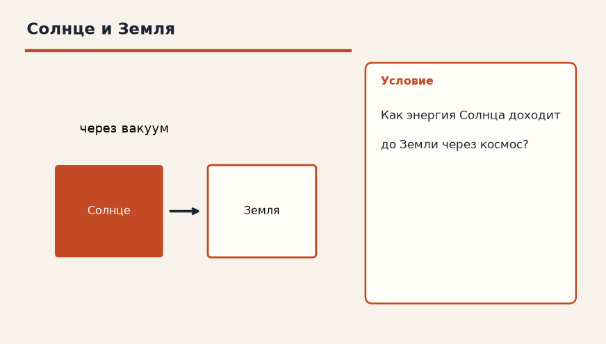

Тема «Излучение»: физический смысл, единицы величин, типичные ошибки и два разобранных примера.

Схема к условию.
Физический смысл
Передача энергии электромагнитными волнами. Не требует среды. Все тела излучают тепло в виде инфракрасных лучей.
Излучение уносит энергию электромагнитными волнами, в быту — в основном инфракрасными. Ему не нужна среда: волны идут и через вакуум. Поэтому Солнце греет Землю, хотя между ними пустота, в которой некого ни толкать теплопроводностью, ни гонять конвекцией.
У костра лицо печёт, даже если ветер дует в сторону и горячий воздух уносит прочь. Это тоже излучение: оно пришло по прямой, а не с потоком.
Все тела что-то излучают. Чем горячее поверхность, тем заметнее поток. Чайник над огнём всё же получает главный жар через дно проводимостью; излучение есть, но в быстрой проверке отмечен основной путь — теплопроводность дна.
Формула и единицы
Излучение — электромагнитные волны, среда не нужна. Все тела излучают.
Пояснение
Солнце греет Землю через вакуум космоса. Тепло от костра чувствуешь лицом, даже если воздух холодный.
Солнце греет Землю через вакуум. Лицо у костра чувствует жар, даже если воздух вокруг прохладный.
Типичные ошибки
Не приписывай солнечному теплу конвекцию космоса: в вакууме потоков газа нет. И не забудь, что у чайника основной путь от огня — всё-таки дно.
Схему к задаче нарисуйте сами. Решение открывается отдельно.
Разбор 1
Солнце
Как энергия Солнца доходит до Земли, если между ними почти нет вещества?
Сначала данные, затем перевод в СИ, если он нужен, потом ход и ответ.
Дано. путь через космос
В СИ. Перевод не нужен: все величины уже заданы в СИ.
Найти. способ
Решение.
Излучение не требует среды.
Энергию несут электромагнитные волны.
Излучением.
Схема для сверки. Её рисуют до того, как открывают решение.
Разбор 2
Костёр
Дым от костра уносит в сторону, а лицу всё равно горячо. Какой перенос здесь главный?
Сначала данные, затем перевод в СИ, если он нужен, потом ход и ответ.
Дано. лицо обращено к пламени, ветер уносит дым
В СИ. Перевод не нужен: все величины уже заданы в СИ.
Найти. способ
Решение.
До лица доходит излучение, а не поток нагретого воздуха.
Излучение.
Схема для сверки. Её рисуют до того, как открывают решение.
Разбор 3
Нужна ли среда
Может ли тепловое излучение идти через вакуум?
Сначала данные, затем перевод в СИ, если он нужен, потом ход и ответ.
Дано. между телами нет вещества
В СИ. Перевод не нужен: все величины уже заданы в СИ.
Найти. ответ
Решение.
Да, излучению среда не нужна.
Да.
Схема для сверки. Её рисуют до того, как открывают решение.
Разбор 4
Не только печь
Излучает ли тепло только раскалённое тело?
Сначала данные, затем перевод в СИ, если он нужен, потом ход и ответ.
Дано. любое тело имеет температуру
В СИ. Перевод не нужен: все величины уже заданы в СИ.
Найти. ответ
Решение.
Излучают все тела.
Чем выше температура, тем больше мощность излучения.
Нет, излучают все тела.
Схема для сверки. Её рисуют до того, как открывают решение.
Разбор 5
Дно чайника ещё раз
От пламени к воде через металлическое дно основной путь — излучение или теплопроводность?
Сначала данные, затем перевод в СИ, если он нужен, потом ход и ответ.
Дано. сплошное металлическое дно
В СИ. Перевод не нужен: все величины уже заданы в СИ.
Найти. способ
Решение.
Через металл энергия идёт теплопроводностью.
Излучение здесь не главный канал сквозь дно.
Теплопроводность.
Схема для сверки. Её рисуют до того, как открывают решение.
Разбор 6
Чёрная и блестящая
Две одинаковые банки с горячей водой: одна закопчённая, другая блестящая. Какая остынет быстрее за счёт излучения и почему так ставят опыт?
Сначала данные, затем перевод в СИ, если он нужен, потом ход и ответ.
Дано. разная поверхность, одна температура
В СИ. Перевод не нужен: все величины уже заданы в СИ.
Найти. сравнение
Решение.
Шероховатая тёмная поверхность излучает сильнее блестящей.
Закопчённая банка остывает быстрее.
Закопчённая.
Схема для сверки. Её рисуют до того, как открывают решение.
Разбор 7
Термос не только вакуум
Почему стенки термоса делают зеркальными, хотя воздух между ними уже откачан?
Сначала данные, затем перевод в СИ, если он нужен, потом ход и ответ.
Дано. вакуум убрал теплопроводность и конвекцию
В СИ. Перевод не нужен: все величины уже заданы в СИ.
Найти. роль зеркала
Решение.
Зеркальный слой ослабляет излучение.
Чтобы уменьшить излучение.
Схема для сверки. Её рисуют до того, как открывают решение.